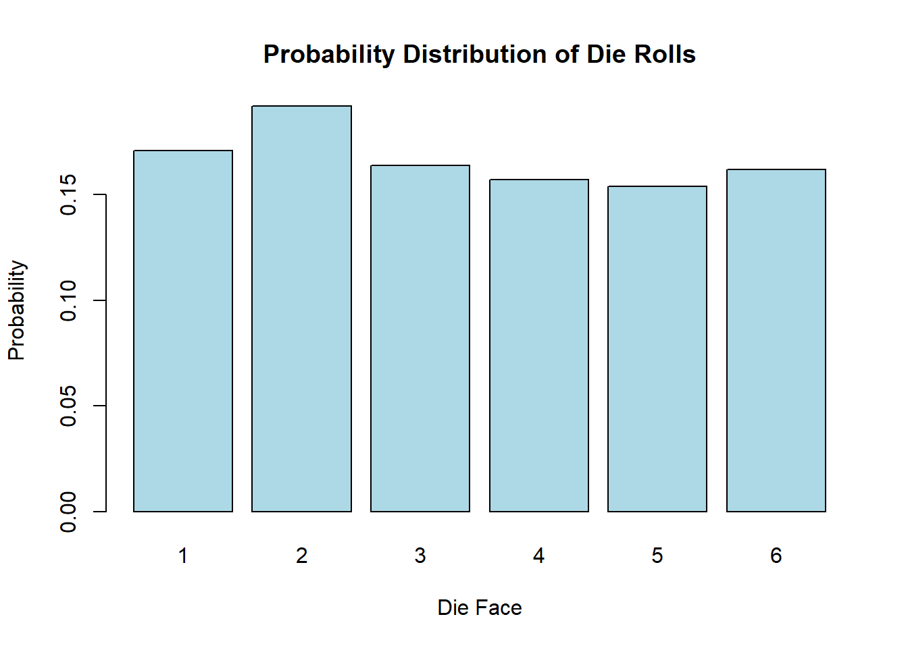

We calculate the probability of drawing a Heart from a sample space (a deck of cards).
We simulate random events such as a coin toss and rolling a six-sided die.
We simulate multiple die rolls and visualize the resulting probability distribution.
We calculate the probability of a specific outcome (rolling a 3).
Code
# Set a seed for reproducibilityset.seed(42)# Define a sample space (e.g., a deck of cards)sample_space <-c("Hearts", "Diamonds", "Clubs", "Spades")# Calculate the probability of drawing a Heart from the sample spaceprobability_heart <-sum(sample_space =="Hearts") /length(sample_space)cat("Probability of drawing a Heart:", probability_heart, "\n")
Probability of drawing a Heart: 0.25
Code
# Simulate a random event (e.g., coin toss)coin_toss <-sample(c("Heads", "Tails"), size =1)cat("Result of a random coin toss:", coin_toss, "\n")
Result of a random coin toss: Heads
Code
# Simulate rolling a six-sided diedie_roll <-sample(1:6, size =1)cat("Result of rolling a die:", die_roll, "\n")
Result of rolling a die: 5
Code
# Simulate multiple die rolls and visualize the probability distributionnum_rolls <-1000die_rolls <-sample(1:6, size = num_rolls, replace =TRUE)# Calculate the relative frequencies for each outcomerelative_frequencies <-table(die_rolls) / num_rollsrelative_frequencies
# Calculate the probability of rolling a 3probability_roll_3 <- relative_frequencies[3]cat("Probability of rolling a 3:", probability_roll_3, "\n")
Probability of rolling a 3: 0.164
Code
# Visualize the probability distribution with a bar plotbarplot(relative_frequencies, main ="Probability Distribution of Die Rolls",xlab ="Die Face", ylab ="Probability", col ="lightblue")

2.2 Addition rule and multiplication rule
2.3 Complements, conditional probability, and Bayes’ theorem
2.4 Counting
2.4.1 Calculate factorial n!
R provides a built-in function to calculate factorial. You can use the factorial() function in R to compute the factorial of a number. Here’s how you can use it:
Code
n <-5factorial_result <-factorial(n)cat("Factorial of", n, "is", factorial_result, "\n")
Factorial of 5 is 120
Replace the value of n with the number for which you want to calculate the factorial, and the factorial() function will return the result.
2.4.2 Find all permutaitons and the number of all permutaions
To do this, we can use the permutations function from the gtools package. For any list of size n, this function computes all the different combinations we can get when we select r items. Here are all the ways we can choose two numbers from a list consisting of 1,2,3:
Notice that the order matters here: 3,1 is different than 1,3. Also, note that (1,1), (2,2), and (3,3) do not appear because once we pick a number, it can’t appear again.
To get the actual number of permutations, one can use the R-function nrow() to find the total number of rows in the output of permutations:
Code
library(gtools)nrow(permutations(3,2))
[1] 6
Alternatively, we can add a vector v to indicate the objects that a permutation is performed on. If you want to see five random seven digit phone numbers out of all possible phone numbers (without repeats), you can type:
Code
all_phone_numbers <-permutations(10, 7, v =0:9) # Use digits 0, 1, ..., 9 n <-nrow(all_phone_numbers)cat("total number of phone numbers n = ", n, "\n")
Instead of using the numbers 1 through 10, the default, it uses what we provided through v: the digits 0 through 9.
2.4.3 Find all combinations and the number of all combinations
How about if the order doesn’t matter? For example, in Blackjack if you get an Ace and a face card in the first draw, it is called a Natural 21 and you win automatically. If we wanted to compute the probability of this happening, we would enumerate the combinations, not the permutations, since the order does not matter.
Code
combinations(3,2)
[,1] [,2]
[1,] 1 2
[2,] 1 3
[3,] 2 3
In the second line, the outcome does not include (2,1) because (1,2) already was enumerated. The same applies to (3,1) and (3,2).
To get the actual number of combinations, one can do
Code
nrow(combinations(3,2))
[1] 3
(optional) Of course, one can define a R-function to calculate a permutation number.
Code
# Function to calculate permutation (nPr)nPr <-function(n, r) {if (n < r) {return(0) } else {return(factorial(n) /factorial(n - r)) }}nPr(3,2)